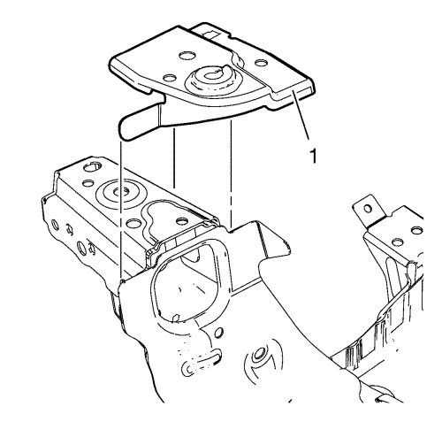
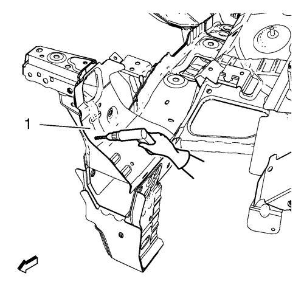
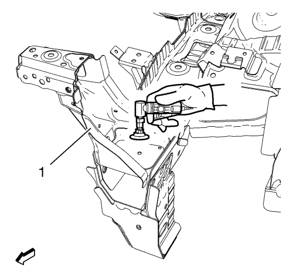
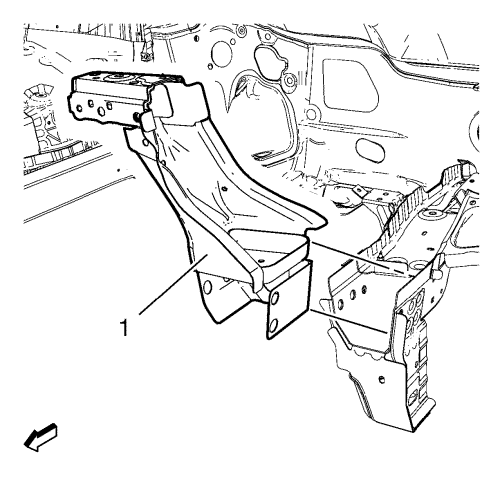
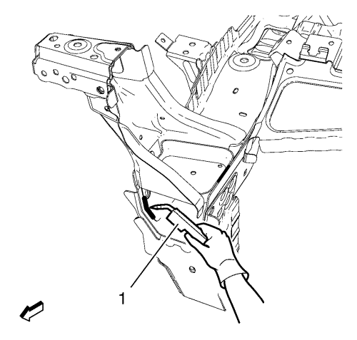
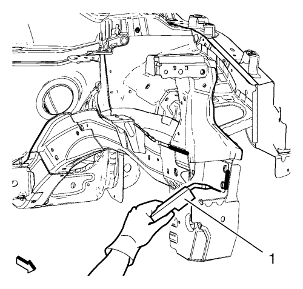
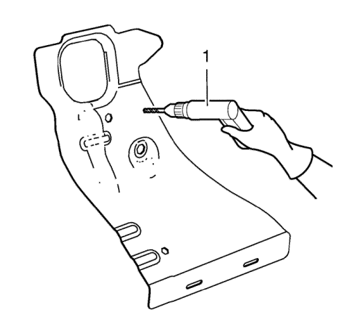
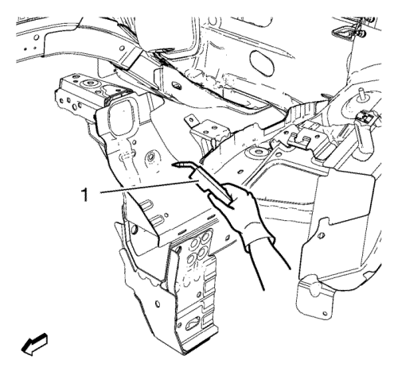
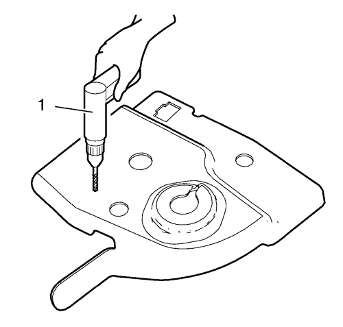
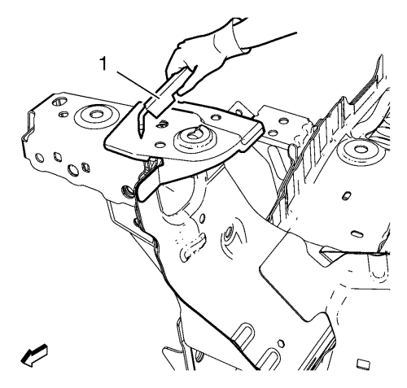

Sustitución de la barra de unión superior del extremo delantero — Soldadura MAG
Nota: De acuerdo con las distintas garantías de corrosión, únicamente están permitidas las técnicas de ensamblaje obligatorias de acuerdo con la normativa a nivel regional.
Procedimiento de desmontaje
Advertencia: Consulte Advertencia en relación con el equipo autorizado para la reparación de choques en la sección Prólogo
Advertencia: Consulte Advertencia de manejo de vidrio y chapa en la sección Prólogo
- Deshabilite el sistema SIR. Consultar Deshabilitación y habilitación del sistema de airbag (SIR).
- Desconecte el cable de batería negativo. Consultar Desconexión y conexión del cable de batería negativo → sin sistema de arranque/parada
- Retirar todas las piezas y componentes relacionados.
- Compruebe visualmente los daños. Repare la mayor parte posible de los daños.
- Retirar los selladores y los materiales anticorrosión del área de reparaciones según sea necesario. Consultar Tratamiento y reparación anticorrosión → Batalla

- Localice y marque todas las soldaduras de fábrica necesarias del soporte del parachoques delantero (1).

- Localice y marque todas las soldaduras de fábrica necesarias del refuerzo de la moldura transversal de metal de la parte delantera (1).
- Taladre todas las soldaduras de fábrica. Anotar el número y situación de las soldaduras para la instalación del conjunto de repuesto.

- Retire el refuerzo del panel transversal de chapa metálica del extremo delantero (1).
- Taladre todas las soldaduras de fábrica.

- Frese las soldaduras de fábrica del soporte de la barra de atirantado superior delantera (1).

- Desmonte el soporte de la barra de acoplamiento superior del extremo delantero (1).
Procedimiento de montaje
- Posicione el soporte de la barra de acoplamiento superior del extremo delantero (1) en el vehículo.
- Compruebe el ajuste del soporte de la barra de acoplamiento superior del extremo delantero.
- Fije con abrazaderas el soporte de la barra de acoplamiento superior del extremo delantero en su posición.

- Suelde según corresponda (1).

- Suelde según corresponda (1).
- Pula las costuras de las soldaduras como sea necesario para las molduras y componentes relacionados.

- Taladre orificios de 8 mm (5/16 pulg.) para soldadura de tapón a lo largo de los bordes del refuerzo de la moldura transversal de metal del extremo delantero, tal y como estaban dispuestos en la moldura original (1).
- Limpie y prepare las superficies a unir para su soldadura.
- Coloque el refuerzo del panel transversal de chapa metálica del extremo delantero (1) en el vehículo.
- Compruebe el ajuste de la barra de acoplamiento superior del extremo delantero.
- Fije con abrazaderas el refuerzo de la moldura transversal de metal del extremo delantero en su posición.

- Realice la soldadura de tapón de manera adecuada (1).
- Use los orificios oblongos de fábrica para la soldadura por puntos.

- Taladre orificios de 8 mm (5/16 pulg.) para soldadura de tapón como se indica en el panel original (1).
- Posicione el soporte del parachoques delantero del capó (1) en el vehículo.
- Fije con abrazaderas el soporte del parachoques delantero del capó en su sitio.

- Realice la soldadura de tapón de manera adecuada (1).
- Monte la barra de impacto del parachoques delantero antes de aplicar sellantes y materiales anticorrosión. Consultar Sustitución de la barra de impactos del paragolpes delantero
- Aplicar los selladores y los materiales anticorrosión para el área de reparaciones según sea necesario. Consultar Tratamiento y reparación anticorrosión → Batalla
- Pinte la zona reparada.
- Instalar todas las piezas y componentes relacionados.
- Conecte el cable negativo de la batería. Consultar Desconexión y conexión del cable de batería negativo → sin sistema de arranque/parada
- Activar el sistema SIR. Consultar Deshabilitación y habilitación del sistema de airbag (SIR).
| © Copyright Chevrolet. All rights reserved |